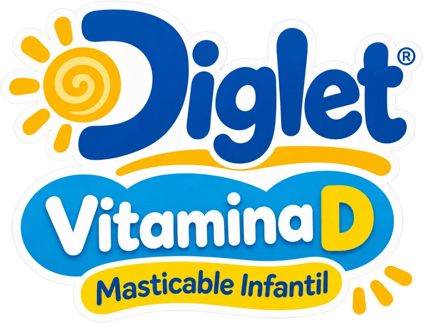

1
¡Hola, vitamina D!
La vitamina D ayuda a tu cuerpo a absorber el calcio que necesitas.
El calcio es un mineral importante para los huesos y los dientes.

¡Soy Digi! Vamos a descubrir por qué la vitamina D y el calcio son buenos compañeros para cuidar nuestros huesos.
Aprende tres cosas verdaderas sobre la vitamina D con palabras sencillas.
La vitamina D ayuda a tu cuerpo a absorber el calcio que necesitas.
El calcio es un mineral importante para los huesos y los dientes.
La vitamina D y el calcio trabajan juntos para mantener los huesos sanos.
Además de los nutrientes, moverse y comer variado ayuda a cuidar nuestro cuerpo.
Podemos obtener vitamina D de alimentos como algunos pescados y productos fortificados.
Un profesional de salud puede orientar a la familia sobre si hace falta un suplemento.
Diglet contiene vitamina D3, también llamada colecalciferol. Esta bolsita reúne cinco sobres individuales para mantener todo organizado.
La cantidad de tabletas de cada sobre no representa una dosis. Un adulto debe seguir la indicación de un profesional de salud y revisar la concentración indicada en el producto.
Tres juegos de verdad, con retos, pistas y estrellas por lo que aprendes.
Elige respuestas correctas para completar el medidor de conocimiento.
Voltea cartas, encuentra las parejas y descubre pistas de nutrición.
Guía al héroe, recoge tres pistas y llega a la meta de los huesos.
Ganas una estrella por completar cada juego. Las estrellas celebran lo que aprendes, no las tabletas que tomas.
Información contrastada con fuentes médicas y pediátricas. El producto real y las indicaciones de tu profesional de salud siempre tienen prioridad.
Basado en recomendaciones generales de la Academia Estadounidense de Pediatría, NIH y MedlinePlus; no son indicaciones personalizadas.
El ingrediente activo es colecalciferol (vitamina D3). Grupo Profármaco identifica Diglet 400 UI y 1,000 UI en comprimidos bucodispersables y con sabor a fresa. El fabricante de la presentación de 1,000 UI figura en su caja como SEID, S. A., España. Consultar información del producto.
600 UI es la ingesta diaria de referencia para personas de 1 a 13 años según NIH; 1,000 UI es la concentración de una presentación comercial Diglet. Que un comprimido contenga 1,000 UI no significa que esa sea la cantidad necesaria para todo niño de 4 a 12 años. El pediatra valora alimentación, estado de salud y tratamientos antes de orientar el uso.
La vitamina D permite absorber calcio y contribuye a mantener los huesos y dientes sanos. El ejercicio, una alimentación variada y los controles pediátricos completan el cuidado. La vitamina D también participa en procesos musculares e inmunitarios, pero no debe presentarse como tratamiento universal para prevenir infecciones.
Entre las fuentes se encuentran pescados grasos como salmón o trucha, yema de huevo y productos fortificados cuya etiqueta indique vitamina D, por ejemplo ciertas leches, yogures o cereales. La cantidad varía por alimento y marca.
La presentación comercial verificada de Diglet 1,000 UI es bucodispersable, es decir, diseñada para desintegrarse en la boca. No debe confundirse automáticamente con una tableta masticable. Para un niño, sigue el prospecto específico del producto y la orientación sanitaria; no se recomienda una pauta universal desde esta página.
Consulta al profesional de salud si el niño necesita un suplemento y cuál es la concentración apropiada. Comprueba otros productos que contengan vitamina D y conserva el envase en un lugar inaccesible para los niños. Un exceso prolongado de vitamina D puede elevar peligrosamente el calcio en la sangre.
Para que ningún niño quiera consumir vitaminas adicionales a cambio de premios. La autorización de un cuidador habilita los juegos en cualquier día, incluso cuando no corresponde tomar el suplemento. Las estrellas se ganan por aprender y jugar.
Bibliografía consultada:
No se atribuyen recomendaciones particulares a médicos que no hayan intervenido en el contenido.